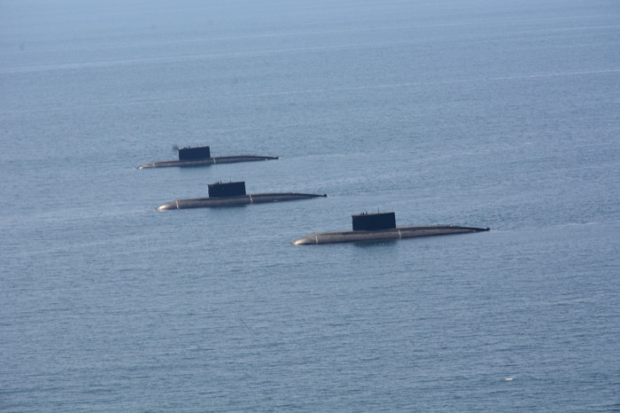

Defence · Maritime
Beneath the Waves: India's Submarine Fleet and the Silent Deterrent

Of all the instruments of war, none is quite so unsettling as the submarine. It is a weapon defined by absence — by the fact that you cannot see it, cannot easily find it, and can never be sure it is not there. A single submarine loose in an ocean can tie down whole fleets sent to hunt it. And a certain kind of submarine, armed with nuclear missiles and hidden in the deep, forms the most survivable and therefore the most credible foundation of a nation's nuclear deterrent — the assurance that no enemy could ever destroy its ability to strike back.
India's submarine fleet is the least visible and, in some ways, the most consequential part of its navy. It ranges from conventional boats that guard its waters and gather intelligence to the nuclear-powered, nuclear-armed submarines that complete the country's nuclear triad and underwrite its promise of assured retaliation. This is the story of India's silent service — the technology, the strategy, the long and difficult effort to build it, and why the boats hidden beneath the waves may matter more to India's security than anything that sails on top of them.
Why submarines matter so much
The submarine's power flows entirely from its stealth. A surface warship can be seen by satellites, aircraft and radar; its position is, in an age of pervasive surveillance, increasingly knowable. A submarine, operating in the vast three-dimensional opacity of the ocean, is extraordinarily hard to find. This single quality gives it disproportionate strategic weight. A hidden submarine can gather intelligence undetected, insert forces covertly, and — most importantly — threaten an enemy's ships and, in the nuclear case, his cities, from a position he cannot locate and therefore cannot neutralise.[1]
Submarines come in two broad families, distinguished by how they are powered, and the difference is strategically enormous. Conventional submarines run on diesel engines and batteries; they are quieter than nuclear boats when running on batteries but must periodically come near the surface to run their engines and recharge, limiting how long they can stay hidden and how far and fast they can range. Nuclear-powered submarines carry a reactor that lets them stay submerged for months, travel fast over vast distances, and remain hidden almost indefinitely — limited only by the endurance of their crews. This endurance is what makes nuclear submarines the platform of choice for the ultimate strategic mission.
The submarine's weapon is doubt. The enemy who cannot find you cannot be sure of anything.
The nuclear triad and the survivable deterrent
To understand why India built nuclear-armed submarines, you have to understand the logic of the nuclear triad. A nation with nuclear weapons seeks to guarantee that it could retaliate even after suffering a devastating first strike — because it is that guarantee of assured retaliation, more than anything, that deters an enemy from striking in the first place. The way to guarantee it is to spread nuclear weapons across three kinds of delivery: land-based missiles, aircraft, and submarines. An enemy might hope to destroy the missiles in their silos and the bombers on their runways in a surprise attack — but he can never be sure of finding and destroying a submarine hidden in the ocean.[2]
The nuclear-armed submarine — the ballistic-missile submarine, hidden in the deep — is therefore the most survivable leg of the triad and the ultimate insurance of deterrence. As long as even one such boat is at sea and undetected, an enemy contemplating a first strike must reckon with certain retaliation, because that submarine will survive whatever befalls the homeland and can answer in kind. This is why the world's serious nuclear powers all seek this capability, and why India, with its declared policy of no-first-use, needed it especially: a doctrine of retaliation-only rests entirely on the certainty that retaliation would survive, and nothing guarantees that survival like a submarine no enemy can find.
INS Arihant and the completion of the triad
India's achievement of this capability was the culmination of one of its longest and most secretive technological efforts. Building a nuclear-powered submarine is among the most demanding feats a nation can attempt — it requires mastering nuclear propulsion in the cramped, unforgiving confines of a submarine hull, and doing so with a reliability that lets human crews live beside a reactor for months. Very few countries have ever managed it. India pursued the goal for decades, and its success placed it in an exclusive club of nations able to build and operate nuclear-powered submarines.[3]
The lead boat, INS Arihant — the name means "destroyer of enemies" — became India's first indigenously built nuclear-powered ballistic-missile submarine, and with its first deterrence patrol India formally completed its nuclear triad, joining the small group of nations with the ability to launch nuclear weapons from land, air and sea. This was a strategic milestone of the first order: it meant that India's promise of assured retaliation now rested, at last, on the most survivable foundation possible, and that the credibility of its entire nuclear deterrent had been fundamentally strengthened. Additional boats of the class have followed and more are planned, steadily building a continuous, credible sea-based deterrent.
The conventional fleet and its challenges
Beneath the strategic drama of the nuclear boats lies the workhorse conventional submarine fleet, which does the everyday business of undersea warfare — guarding India's waters, gathering intelligence, training against the surface fleet, and standing ready to threaten an enemy's shipping in war. Here India's story has been one of both progress and persistent challenge, because maintaining a modern conventional submarine fleet is expensive, technically demanding, and unforgiving of delay.[4]
India has modernised its conventional fleet through the domestic construction of advanced diesel-electric submarines, building French-designed Scorpene-class boats — the Kalvari class — in Indian shipyards under a programme aimed at both fielding capable submarines and building the industrial skill to construct them at home. These modern boats, quiet and well-armed, are a substantial improvement over the older vessels they supplement. But the fleet has faced the familiar Indian challenges of delayed programmes and an ageing existing force, and the navy has long pressed for faster progress to maintain the numbers its vast maritime responsibilities demand.
A particular ambition has been to add air-independent propulsion to the conventional fleet — technology that lets a diesel-electric submarine stay submerged far longer without surfacing to recharge, dramatically improving its stealth and endurance. Developing and fielding this capability, ideally through indigenous technology, is a priority, because it narrows the gap between conventional and nuclear boats in the crucial quality of how long they can stay hidden. India has also pursued the acquisition and indigenous development of nuclear-powered attack submarines — fast, hunter-killer boats distinct from the missile-carrying strategic submarines — to strengthen the fleet's ability to hunt enemy ships and submarines.
The undersea contest in the Indian Ocean
The strategic backdrop to all of this is an increasingly contested undersea environment in the Indian Ocean. As outside powers extend their naval presence into these waters, the competition beneath the surface intensifies — submarines from distant nations operate in the region, and the ability to detect, track and, if necessary, counter them becomes a vital naval task. Anti-submarine warfare — the hunting of hostile submarines using ships, aircraft, sensors and one's own submarines — is a demanding discipline in which India has invested heavily, because a submarine threat in its own ocean is a threat to the sea lanes and the fleet alike.[5]
India's submarines are central to this contest in both directions: as hunters that can detect and threaten hostile submarines and surface ships, and as the hidden assets that an adversary must worry about and expend effort to counter. In a region where the undersea domain is becoming a theatre of quiet competition, a capable submarine fleet is both a shield and a source of leverage — a way to complicate any adversary's plans and to ensure that India's own waters cannot be dominated from below.
The long, hard road of building them
It is worth appreciating how difficult the whole enterprise has been, because the difficulty is part of the achievement. Submarines are among the most complex machines humanity builds — sealed vessels that must survive crushing pressure, run silently to avoid detection, sustain their crews in isolation, and, in the nuclear case, carry a reactor and strategic weapons. Building them domestically requires mastering an enormous range of technologies and industrial skills, and doing so under the secrecy that strategic programmes demand. India's decades-long effort to build both its nuclear and conventional boats at home has been a school for its shipbuilding and defence industry, accumulating capabilities that extend far beyond the submarines themselves.[3]
The setbacks and delays that have marked the programmes are, in this light, the growing pains of a nation teaching itself one of the hardest crafts in defence. Each boat built adds to the store of national skill; each programme, however delayed, moves India further along the road to self-reliance in a domain where dependence on foreign suppliers is especially dangerous, because a submarine fleet cut off from spares and support in a crisis is a fleet that cannot dive. The strategic value of building submarines at home is inseparable from the strategic value of the submarines themselves.
To build a submarine is to teach a nation patience, secrecy and precision all at once. Few crafts are harder; fewer matter more.
The credibility of the sea-based deterrent
The strategic value of a ballistic-missile submarine rests on a demanding set of conditions, and it is worth examining them because they explain why India's effort has been so long and so difficult. A sea-based deterrent is credible only if a nuclear-armed submarine can be kept continuously at sea, hidden and undetected, ready to retaliate at all times — a posture the great nuclear powers call continuous at-sea deterrence. Achieving it requires not one submarine but several, so that as one returns to port for maintenance and rest, another is always on patrol; a single boat cannot guarantee the unbroken presence on which the deterrent depends.[2]
It requires, too, that the submarines carry missiles of sufficient range to threaten an adversary's vital targets from the safety of India's own maritime backyard, so that the boats need not venture into dangerous waters to hold their targets at risk. It requires robust and secure communications, so that a submarine hidden in the deep can receive the authenticated order to launch if that terrible moment ever came, while remaining undetectable — a genuinely hard technical problem, since the very act of communicating can betray a submarine's position. And it requires that the whole system — the boats, the missiles, the warheads, the communications, the command arrangements — be reliable enough that an adversary genuinely believes retaliation would follow any attack, for it is that belief, and only that belief, that deters.
Building all of this — multiple nuclear submarines, submarine-launched missiles of adequate range, secure communications, and the command-and-control arrangements for a sea-based nuclear force — is an enormous and long-term undertaking, which is why India's sea-based deterrent has been built patiently over many years and remains a work in continuing progress. Each additional boat, each longer-range missile, each improvement in communications and reliability strengthens the credibility of the deterrent. The goal — a continuous, credible, survivable sea-based deterrent that no adversary could neutralise — is one of the most demanding a nation can set itself, and India's steady progress toward it represents a strategic achievement of the first order, even as the full realisation of continuous at-sea deterrence remains an ongoing effort.
Hunters and killers: the attack submarine
Distinct from the strategic missile-carrying submarines is another crucial category that deserves its own attention: the nuclear-powered attack submarine, the fast, quiet hunter-killer designed not to carry strategic missiles but to hunt enemy ships and submarines, to escort the strategic boats and the surface fleet, and to project power beneath the waves. Where the ballistic-missile submarine hides and waits, the attack submarine ranges and hunts, using its nuclear-powered speed and endurance to pursue, track and, if war came, destroy an adversary's naval forces.[1]
These vessels are enormously valuable and enormously demanding to build and operate. Their nuclear propulsion gives them the speed and endurance to keep pace with a fast-moving fleet and to patrol vast distances submerged, capabilities that conventional submarines cannot match. India has pursued the acquisition and indigenous development of such attack submarines, recognising that a complete and capable submarine force needs not only the strategic missile boats that underwrite deterrence but the hunter-killers that can contest the undersea domain and protect the fleet. Developing the capability to build these boats at home, mastering the demanding technology of nuclear-powered attack submarines, is a significant part of India's long-term naval ambition.
The attack submarine matters especially in the contested undersea environment of the Indian Ocean, where the ability to detect, track and, if necessary, counter hostile submarines is a vital naval task. A capable force of nuclear-powered attack submarines gives India both a powerful means of hunting an adversary's undersea forces and a valuable asset that any opponent must worry about and expend effort to counter. Together with the strategic missile boats and the conventional fleet, they form the layers of a complete submarine force — each type playing its distinct and complementary role beneath the waves.
The undersea arms race in the Indian Ocean
The whole enterprise of India's submarine development unfolds against the backdrop of an intensifying contest beneath the surface of the Indian Ocean, and understanding that contest clarifies the strategic stakes. As outside powers extend their naval presence into these waters — building ports, basing forces, and deploying submarines far from their own shores — the undersea domain of the Indian Ocean has become a theatre of quiet competition, in which the ability to operate, detect and counter submarines has grown increasingly important.[5]
Submarines from distant nations now operate in the region, and their presence poses a real challenge: a hostile submarine loose in the Indian Ocean threatens the sea lanes on which India depends, the surface fleet, and India's freedom of action in its own maritime neighbourhood. Countering this threat requires anti-submarine warfare — the demanding discipline of hunting hostile submarines using surface ships, maritime patrol aircraft, sensors, and one's own submarines — in which India has invested heavily. The contest runs both ways: India must be able to hunt an adversary's submarines while operating its own undetected, and the same qualities of stealth and sensing that make a submarine valuable make anti-submarine warfare one of the hardest problems in naval affairs.
India's submarine fleet is central to this contest in both roles — as the hidden hunters that can detect and threaten hostile submarines and surface ships, and as the assets an adversary must worry about and work to counter. In an ocean where the undersea domain is becoming an arena of strategic competition, a capable submarine fleet is both a shield that protects India's interests and a source of leverage that complicates any adversary's plans. The steady development of India's submarines — strategic, attack and conventional — is thus not only about deterrence in the abstract but about the concrete, intensifying contest for the depths of the ocean that bears India's name.
The human element: life in the silent service
For all the talk of reactors, missiles and stealth, a submarine is ultimately a vessel crewed by human beings, and the human dimension of submarine service is extraordinary and deserves recognition. Submariners live and work in one of the most demanding environments any military asks of its people — sealed inside a steel hull, submerged for weeks or months, deprived of sunlight and open air, cut off from the world and from their families, in cramped quarters where every cubic foot is spoken for, bearing the constant awareness that the sea outside would crush the hull in an instant if anything failed.[1]
The demands are especially acute aboard nuclear submarines on deterrence patrol, which may stay submerged and hidden for the longest periods, their crews maintaining absolute vigilance and readiness while remaining utterly cut off, ready if the unthinkable order ever came. This requires people of exceptional discipline, technical skill, psychological resilience and dedication — a specially selected and rigorously trained cadre who accept isolation, danger and hardship as the price of serving in the silent service. The quality of a submarine force depends as much on these people as on the vessels themselves; the finest boat is only as good as the crew that operates it, and building a capable submarine arm means building the human expertise and culture, accumulated over years, that the demanding craft of undersea warfare requires.
This human dimension is part of why building a submarine capability takes so long and matters so much. A nation cannot simply acquire submarines and operate them; it must develop, over years and decades, the cadre of skilled submariners, the training establishments, the doctrine and the institutional culture that turn steel vessels into effective instruments of war. India's decades-long submarine effort has built not only boats but this human foundation — a corps of experienced submariners and the culture of excellence and discipline that undersea warfare demands. It is an invisible achievement, like the boats themselves, but it is inseparable from the capability they represent.
The conventional fleet's race against time
While the nuclear boats carry the strategic glamour, the conventional submarine fleet does much of the everyday work of undersea warfare, and its story is one of a quiet but pressing race against time. India's conventional fleet includes ageing vessels that have served long and are approaching the end of their useful lives, and replacing them with modern boats fast enough to maintain the fleet's numbers has been a persistent challenge, marked by the delays that have so often afflicted Indian defence programmes.[4]
The modernisation has proceeded chiefly through the domestic construction of advanced diesel-electric submarines — the French-designed Scorpene-class boats built in Indian shipyards, quiet and well-armed vessels that substantially improve the fleet's capability and, equally importantly, build the industrial skill to construct submarines at home. But the navy has long pressed for faster progress, warning that the gap between the retirement of old boats and the arrival of new ones risks leaving the fleet below the strength its vast maritime responsibilities demand. Maintaining an adequate number of capable conventional submarines, in the face of ageing vessels and the slow pace of construction, is a continuing preoccupation of India's naval planners.
A particular priority has been the pursuit of air-independent propulsion — technology that allows a diesel-electric submarine to stay submerged far longer without surfacing to recharge its batteries, dramatically improving its stealth and endurance and narrowing the crucial gap between conventional and nuclear boats in how long they can remain hidden. Developing and fielding this capability, ideally through indigenous technology, would significantly enhance the conventional fleet's effectiveness, and it represents exactly the kind of technological advance that could help India's conventional submarines remain formidable in an increasingly contested undersea environment. The conventional fleet may lack the strategic drama of the missile boats, but it is the workhorse of India's undersea power, and keeping it modern, numerous and capable is a task of real and pressing importance.
The industrial school beneath the sea
The effort to build submarines at home has been, beyond its strategic purpose, one of the most demanding industrial schools India has ever set itself, and the capabilities it has accumulated ripple far beyond the boats themselves. To build a submarine domestically — to fabricate a hull that survives crushing pressure, to install and integrate the vast array of complex systems, to master the welding, the materials, the quality control on which lives depend, and in the nuclear case to build and integrate a reactor — requires assembling and perfecting an enormous range of industrial skills, many of them at the very edge of what the country's industry can do.[3]
Each submarine programme, whatever its delays and difficulties, has advanced this national industrial capability, teaching Indian shipyards, engineers and workers to do things they could not do before. The knowledge accumulated in building submarines strengthens the broader shipbuilding and defence-manufacturing base, contributes to the wider goal of self-reliance, and builds the foundation for future, more capable boats. The value of building submarines at home is thus inseparable from the value of the submarines themselves: it is an investment in national industrial capability that pays dividends across the whole defence-industrial sector and that no amount of importing could ever provide.
This industrial dimension also explains why self-reliance in submarines matters so acutely in strategic terms. A submarine fleet dependent on foreign suppliers for spares, support and technology is a fleet vulnerable to having that support withdrawn in a crisis — and a submarine that cannot be maintained is a submarine that cannot dive. By building its boats at home and accumulating the capability to sustain and improve them, India reduces this dangerous dependency and gains control over one of its most sensitive strategic assets. The long, difficult, delay-marked effort to build submarines domestically is, in this light, not merely a matter of national pride but of strategic necessity — the accumulation, boat by boat and program by program, of the sovereign capability to build, maintain and improve the vessels on which so much of India's security beneath the waves depends.
The strategic choices of a growing fleet
Building a submarine force involves hard strategic choices about balance and priority, for resources are finite and the different kinds of submarine serve different purposes, and how a nation allocates its effort among them reveals its strategic priorities. India must weigh the competing claims of its strategic missile submarines, which underwrite nuclear deterrence; its nuclear-powered attack submarines, which contest the undersea domain and protect the fleet; and its conventional submarines, which do much of the everyday work of coastal and regional defence. Each is valuable, each is expensive, and each competes for the same limited resources of money, industrial capacity and skilled manpower.[2]
The choices extend to the balance between the submarine force and the rest of the navy, and here submarines have a strong claim that shapes the debate. In an age of pervasive surveillance, where surface ships including even large and costly aircraft carriers can increasingly be found and targeted, the submarine's stealth gives it a survivability that surface vessels are steadily losing. Some strategists argue that this makes submarines an especially cost-effective investment — that a nation can buy more real combat power and deterrence, more survivably, through submarines than through expensive and increasingly vulnerable surface ships. The balance between investing in submarines and investing in surface forces, including carriers, is a genuine and ongoing strategic debate in India as in every major navy.
These choices are made harder by the long timelines and the delays that have afflicted India's submarine programmes, which mean that decisions taken today shape the fleet of decades hence, and that gaps or missteps take many years to correct. Building submarines is a slow business, and a nation must plan its submarine force far in advance, anticipating the strategic environment of the future and committing resources long before the boats are ready. India's challenge is to make these long-term choices wisely — to build the right balance of strategic, attack and conventional submarines, to sustain the industrial base that produces them, and to maintain the fleet's strength through the long cycles of construction and retirement — all in service of a strategic environment that is itself evolving, as the undersea contest in the Indian Ocean intensifies and the technologies of detection and stealth advance. The submarine force India builds through these choices will shape its security beneath the waves for a generation.
The silent guarantee
The submarine fleet is, by its nature, the part of India's military the public sees least and understands least. Its boats deploy in secret, patrol in silence, and return without announcement. There are no parades of submarines, no dramatic footage of their patrols; their entire value depends on their remaining hidden and unknown. Yet this least-visible arm carries some of the heaviest strategic responsibilities the nation assigns — including, in the case of the nuclear-armed boats, the ultimate guarantee that India's promise of retaliation is credible and its deterrent secure.
Somewhere in the depths of the ocean, at this moment, an Indian submarine is on patrol — silent, hidden, patient. If it carries nuclear missiles, it is the living embodiment of India's assurance that no enemy could ever strike it with impunity, the survivable heart of its deterrent. If it is one of the conventional fleet, it is guarding the waters, watching the adversary, ready. Either way, it represents the quiet culmination of decades of effort to master one of the hardest crafts in all of defence. Beneath the waves, unseen and unheard, India's silent service keeps its watch — and in that silence lies a large part of the nation's security.